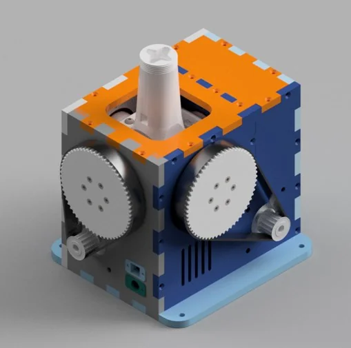
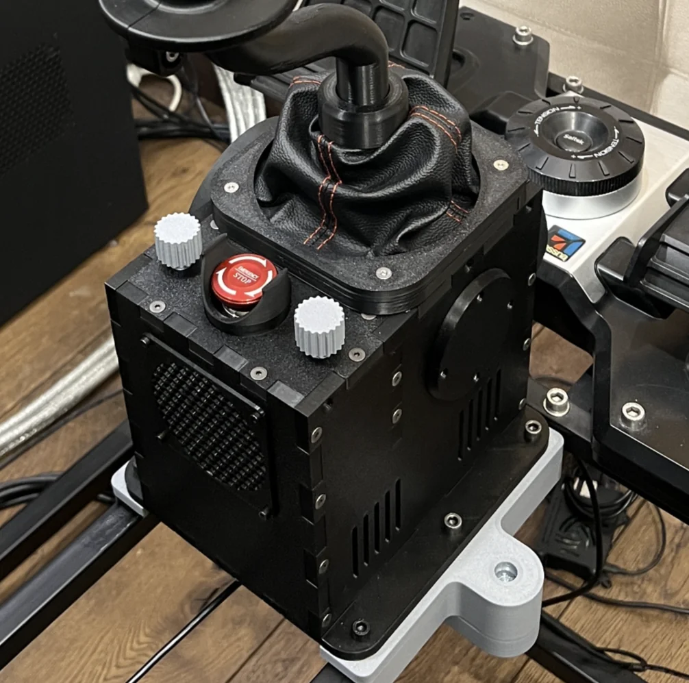

3. Community Rhino Builds¶
This page documents a lineage of community-developed Rhino FFB joystick builds, starting with Mabo’s original design and followed by adaptations from Protomaker and Gadroc.
3.1 Mabo’s FFB Joystick Base (The Original)¶

This project provides the CAD files for the mechanical assembly of a VPForce kit-based FFB (Force Feedback) joystick base.
GitHub Repository: https://github.com/mabo1972/FFB-Joystick-Base-Plywood
3.1.1 Project Details¶
3.1.1.1 Description¶
This repository contains the necessary files to build a prototype of a FFB joystick base using a VPForce kit. It includes 3D printable parts, DXF drawings for laser-cut case components, and a full STP assembly in CAD.
3.1.1.2 Bill of Materials¶
A bill of materials is provided in the repository, which lists: * VPForce kit components * 3D printed parts * Laser-cut plywood parts * Bearings * Motor pulleys * Belts
3.2 Protomaker’s Rhino FFB Clone (Adaptation of Mabo’s Design)¶

This project provides the necessary files and instructions to build a DIY version of the Rhino FFB Stick base. It is an adaptation of Mabo1972’s original design, optimized for 3D printing.
GitHub Repository: https://github.com/protomaker964/Rhino-FFB-Clone-3D_Printed
3.2.1 Project Details¶
3.2.1.1 Description¶
This project is a clone of the Rhino FFB Stick base, designed for 3D printing. It requires a VPforce 57BLF03x2 motor kit and includes 3D parts for various gimbal pulley sizes. The design is an adaptation of the original work by Mabo1972.
3.2.1.2 Requirements¶
- VPforce 57BLF03x2 motor kit
- 3D printer
- Various electronic components (see parts list in the repository)
3.2.1.3 Features¶
- Optimized for 3D printing.
- Includes different gimbal pulley sizes.
- Detailed parts list and instructions are provided in the repository.
3.3 Gadroc’s FFB Joystick (Based on Mabo’s and Protomaker’s Designs)¶
This project is a 3D-printable Force Feedback (FFB) Joystick, based on Mabo’s FFB Joystick and including improvements from protomaker’s version. The design is optimized for 3D printing and uses heat-set threaded inserts.
GitHub Repository: https://github.com/Gadroc/vpforce-ffb-joystick
3.3.1 Project Details¶
3.3.1.1 Design Focus¶
- Optimized gimbal for 3D printing to minimize support material and optimize mating surfaces.
- Use of heat-set threaded inserts for robust connections.
- Incorporates a single potentiometer similar to the Rhino.
- Uses an XT60 connector for power.
- A 72-tooth pulley for a 6:1 gear ratio.
- Shell adjusted for 3D printing.
3.3.1.2 Open Items¶
- Two-part stick adapter for adjustable stick length.
- Throw limiters.
- Testing of the boot clamp.
- Optimizing screw types to reduce variety.
- Complete the design for the base and electronics mounting.
- Finalize the grip mount design.
- Add hall sensor mounts.
- Design a PCB for the controller and sensors.
3.3.1.3 Printed Parts¶
The following is a list of STL files, quantities, and support requirements:
| Part Name | Quantity | Supports |
|---|---|---|
| Gimbal_Pitch_Inner | 1 | Yes |
| Gimbal_Pitch_Outer | 1 | Yes |
| Gimbal_Roll_Inner | 1 | Yes |
| Gimbal_Roll_Outer | 1 | Yes |
| Gimbal_Frame_Left | 1 | No |
| Gimbal_Frame_Right | 1 | No |
| Gimbal_Frame_Center | 1 | No |
| Motor_Mount_Pitch | 1 | No |
| Motor_Mount_Roll | 1 | No |
3.3.1.4 Bill of Materials (BOM)¶
A detailed Bill of Materials with McMaster Part numbers is available in the GitHub repository. Key components include:
- Bearings: 6806-2RS (x4), 6802-2RS (x8)
- Threaded Inserts: M3, M4
- Screws: M3, M4
- Belts: HDT 5M-15W
- Connectors: XT60
3.3.1.5 Assembly¶
Assembly instructions are not yet available, but the design is closely derived from protomaker’s version, so their assembly guide can be used as a reference.